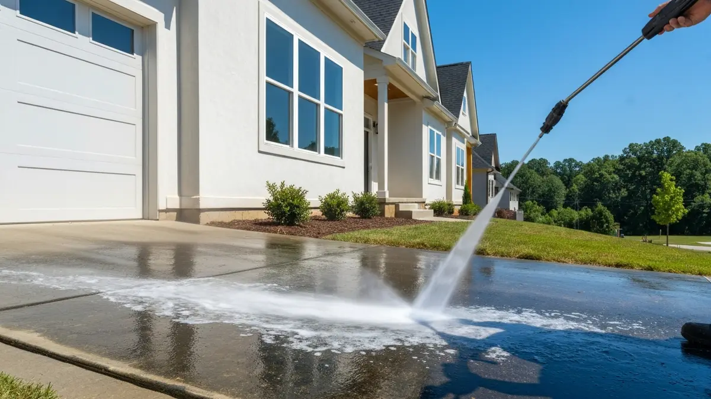

Hardin Valley is one of Knox County's fastest-growing communities, a swath of new residential development stretching along the Pellissippi Parkway between Knoxville and the Loudon County line. Hardin Valley Academy, numerous new subdivisions, and convenient I-140 access have drawn families and professionals looking for newer construction with east Tennessee surroundings. Many of these homes were built in the 2010s with composite driveways, vinyl siding, and wood or composite decks that benefit from regular professional cleaning to maintain their appearance and warranty compliance. Knox Pressure Pros serves all of Hardin Valley.

Our Hardin Valley Pressure Washing Services
- Driveway & Concrete Cleaning — Remove years of oil, grime, and algae from Hardin Valley driveways and walkways.
- House Washing — Safe, low-pressure house washing that removes mildew and oxidation without damage.
- Deck & Patio Cleaning — Wood and composite deck restoration for Hardin Valley homeowners.
- Roof Soft Wash — Safe roof cleaning that removes black streaks without high-pressure damage.
- Commercial Pressure Washing — Storefront, parking lot, and building exterior cleaning in Hardin Valley.

Frequently Asked Questions — Pressure Washing in Hardin Valley
Do you serve the new subdivisions in Hardin Valley?
Yes. We actively serve Hardin Valley's many newer subdivisions. Vinyl siding on newer homes, composite decks, and concrete driveways in communities like Solway and along Highway 162 are common service requests. We are familiar with this part of Knox County well.
How do you handle composite deck cleaning in Hardin Valley homes?
Composite decking requires soft wash techniques — high pressure can permanently damage the surface texture and void warranties. We use appropriate low-pressure methods with specialized composite deck cleaners that safely remove organic growth without harming the material.
What causes mildew on newer homes in Hardin Valley?
Even brand-new vinyl siding in Hardin Valley can develop mildew within 2 to 3 years due to East Tennessee's humidity, especially on north-facing walls and areas shaded by tree canopy. Annual soft wash cleaning prevents permanent staining and maintains curb appeal.
Ready for a Clean Home in Hardin Valley?
Free estimates · Licensed & insured · Serving Hardin Valley and all of Knox County
📞 (865) 378-8377